アートコンテスト
可視化に関連するアート作品を顕彰するための「アートコンテスト」です．アートの視点から多彩な作品をお待ちしています．過去の受賞作品は，アートコンテストオリジナルサイト外部サイト をご確認ください．
募集要項や申し込みについては，アートコンテストオリジナルサイト外部サイトをご確認ください．
日程
- 2021/6/25(金)
2021/6/11(金)応募締切 - 2021/7/23(金)
2021/7/9(金) 2021/6/25(日)作品提出締切（立体等は審査用として画像・動画を提出）
※シンポジウムがハイブリッド方式での開催となった場合，入選者の方々には会場へお越しの上、応募作品に関するご説明，プレゼンテーションを行っていただきます．
実施方法および投票
本年度は、可視化に関連するアート作品を顕彰する「アートコンテスト」をオンライン上で開催いたします。アートコンテストのウェブサイトで応募作品を公開しておりますので、是非ともご覧ください。（ページにアクセスする際、ユーザー名はvsj, パスワードはkashikaとご入力ください）
応募作品の作品番号（No.01～No.16）をクリックしますと、作品概要と制作物をご覧になれます。
あわせて、優秀作品への投票を9月9日（木）9:00～9月11日（土）12:00の期間中に行っております。投票ページへアクセスし、最も素晴らしいと感じた作品に投票を行っていただけますと幸いです。（投票はお1人につき1回までとし、上記の時間中にいただいた投票を集計の対象といたします）
| ART CONTEST 2020 受賞作品 | ||
|---|---|---|
| 大賞 | 金賞 | 銀賞 |
| 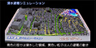 | 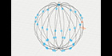 | |
| 廣川雄一、西川憲明、浅野俊幸、坂井隆志、山田武志、印南潤二、大道寺覚、遠山啓、中澤敬 | 内田亘俊 | 守谷茉鈴 |
| プロジェクションマッピングによる避難シミュレーションの可視化 | IanniXを用いた3次元図形譜と聴覚障がい者のための音の可視化 | 顔彩阿修羅像 COVID19 に対する若者の感情の可視化 |
| ART CONTEST 2019 受賞作品 | ||
| 大賞 | 金賞 | 銀賞 |
| 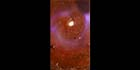 | 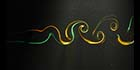 | 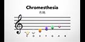 |
| 遠藤 悠平 | 古賀 千華、佐藤 唯菜 | 小玉 健人、向 優作 |
| stars | Karman Vortex | Le monde de Debussy |
| ART CONTEST 2018 受賞作品 | ||
| 大賞 | 大賞 | 金賞 |
| 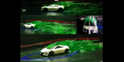 | 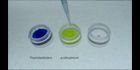 | 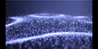 |
| 石井 大地、桑田輝一 | 芹田 真澄、武田 咲江 | 太田 槙吾、市川 拓弥 |
| Streamlines | いろどり | “Watch” the sound |
| 銀賞 | ||
| 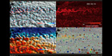 | ||
| 松岡 大祐、荒木 文明、佐々木 英治 | ||
| encounters of ocean currents and eddies | ||
| ART CONTEST 2017 受賞作品 | ||
| 大賞 | 金賞 | 銀賞 |
| 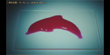 | 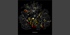 | 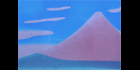 |
| 溝口 美生、櫻井 亮介 | 新原 俊樹 | 藤田 涼亮、藤田 健介 |
| Droplet painting 10s.jpg | ファイルサーバ内の電子ファイル格納状況の可視化 8s.jpg | Invisible canvas 9s.jpg |
| ART CONTEST 2016 受賞作品 | ||
| 大賞 | 金賞 | 銀賞 |
| 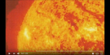 | 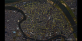 | 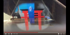 |
| 酒井 大輝、執行 悠太、川上 拓海 | 廣川 雄一、西川 憲明、浅野 俊幸、坂井 隆志、山田 武志、印南 潤二 | 川副 由梨花、川原 直人、慶山 智昭、佐野 史亮、大工原 みのり、根岸 菜摘、宮下 裕也、宮田 佳苗、八木 達也 |
| Micro-space odyssey | 都市河川氾濫時における大規模避難シミュレーションの可視化 | つながる未来 |
| ART CONTEST 2015 受賞作品 | ||
| 大賞 | 金賞 | 銀賞 |
| 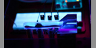 | 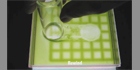 |

|
| 市川 賀康、武藤 真和 | 菊地 謙次、鹿毛 あずさ、石川 拓司 | 大道 勇哉、松尾 裕一、藤野 敦志、酒井 憲悟、藤田 直行 |
| magne-synchronism | Chlamy Arta | 3Dプリンタによる透明樹脂を用いた3次元流体ダイナミックスの立体表現 |
| ART CONTEST 2014 受賞作品 | ||
| 大賞 | 金賞 | 銀賞 |
| 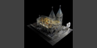 | 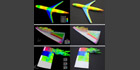 | |
| 王 セイ | 石向 桂一、松尾 裕一、藤野 敦志、酒井 憲悟、藤田 直行 | 茨城 和花 |
| 粒子ベースレンダリングを用いた松が峰教会の半透明レンダリング | 三次元プリンターを用いた航空機周り流れ場の 数値シミュレーション結果の立体可視化模型 | 笑顔のシンフォニー |
| ART CONTEST 2013 受賞作品 | ||
| 大賞 | 金賞 | 銀賞 |
| 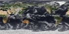 | 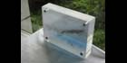 | 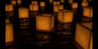 |
| 松岡 大祐 | 川原 慎太郎 | 松本 貫 |
| 現代版ゴッホが描いた地球 | 三次元シミュレーションデータの実空間への投影 | 送灯 |
オーガナイザ
東洋大学総合情報学部 加藤 千恵子
東洋大学総合情報学部 多田 光利
早稲田大学人間総合研究センター 菅原 徹
東京理科大工学部 元祐 昌廣
東北大学工学研究科 菊地 謙次
東洋大学総合情報学部 青木 滉一郎
名古屋市立大学芸術工学部 高橋 信雄